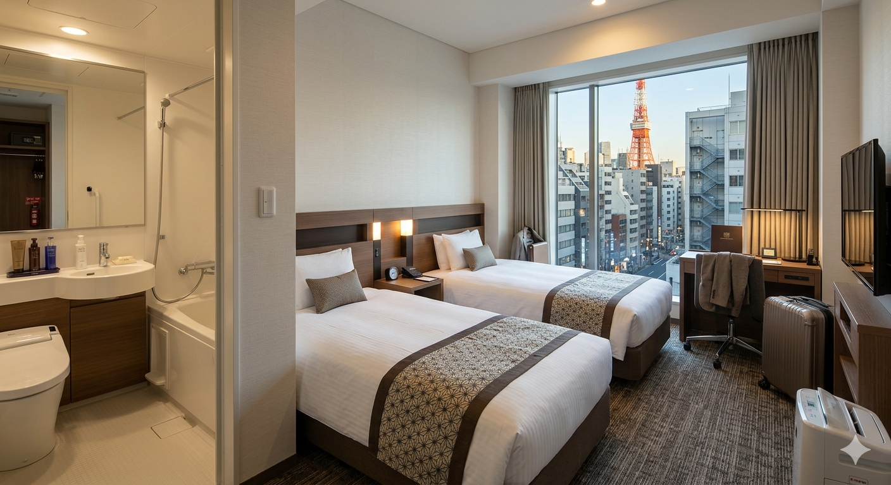

東京のホテル宿泊ガイド｜部屋の広さ・料金・設備・おすすめの宿泊タイプを徹底解説

はじめに
東京には数え切れないほどのホテルが存在しますが、初めて東京を訪れる外国人旅行者が最も驚くのは、「東京のホテルは思ったより部屋が狭い」という点でしょう。
東京は世界有数の大都市であり、地価や人件費が非常に高いため、多くのホテルは限られたスペースを最大限に活用するよう設計されています。そのため、欧米や東南アジアの同価格帯ホテルと比較すると、客室面積が小さい場合が少なくありません。
本記事では、東京のホテルの一般的な広さ、設備、価格帯、そしてどのような旅行者に向いているのかを詳しく解説します。
東京のホテルの客室はどのくらいの広さ？
東京で一般的なホテルの客室面積は以下の通りです。
| ホテルタイプ | 客室面積 | 宿泊料金（1泊） |
|---|---|---|
| カプセルホテル | 2〜4㎡ | 3,000〜8,000円 |
| ビジネスホテル | 12〜18㎡ | 8,000〜18,000円 |
| シティホテル | 20〜30㎡ | 15,000〜35,000円 |
| ラグジュアリーホテル | 30〜45㎡ | 30,000〜80,000円 |
| ラグジュアリー＆レジェンダリーホテル | 45㎡以上 | 80,000円以上 |
特に東京のビジネスホテルでは、15㎡前後の客室が一般的です。スーツケースを2つ広げるとかなりスペースが狭くなるため、大きな荷物を持つ旅行者は客室面積を事前に確認することをおすすめします。
ビジネスホテル
東京で最も一般的なホテルタイプです。
- 客室面積：12〜18㎡
- 主な設備：ユニットバス、無料Wi-Fi、空調、電気ケトル、テレビ、アメニティ、コインランドリー
- 宿泊料金：8,000〜18,000円
メリット
- 駅から近い
- 宿泊料金が比較的安い
- 清潔で機能的
- 一人旅に最適
デメリット
- 客室が小さい
- 長期滞在にはやや不向き
観光がメインの旅行であれば、ビジネスホテルで十分満足できるでしょう。
シティホテル
観光客やカップルに人気のホテルタイプです。
- 客室面積：20〜30㎡
- 主な設備：レストラン、バーラウンジ、24時間フロント、荷物預かりサービス
- 宿泊料金：15,000〜35,000円
メリット
- 客室が広い
- スーツケースを広げやすい
- サービス水準が高い
デメリット
- ビジネスホテルより高価
東京観光では最もバランスの良い選択肢と言えます。
ラグジュアリーホテル
特別な記念日の滞在におすすめの旅行者向けです。
- 客室面積：30〜45㎡
- 主な設備：フィットネスジム、バーラウンジ、コンシェルジュサービス、眺望の良い客室
- 宿泊料金：30,000〜80,000円
メリット
- ゆったりとした客室
- 高品質な睡眠
- 優れたサービス
東京タワーや東京スカイツリーの夜景を楽しめるホテルも多数あります。
ラグジュアリー＆レジェンダリーホテル
東京には世界トップクラスのラグジュアリーホテルが多数存在します。
- 客室面積：45㎡以上
- 主な設備：屋内プール、スパ、高級レストラン、エグゼクティブラウンジ、専任コンシェルジュ
- 宿泊料金：80,000〜300,000円以上
特別な記念日やビジネスエグゼクティブの宿泊に最適です。ザ・ペニンシュラ東京やパレスホテル東京などが代表的です。
家族旅行でホテルを選ぶ際の注意点
家族旅行の場合、価格だけでホテルを選ぶのはおすすめできません。東京では「ダブルルーム」と表示されていても、15㎡程度しかない場合があります。
家族旅行では以下のポイントを確認しましょう。
チェックポイント
- 客室面積（25㎡以上推奨）
- ベッドサイズ
- 宿泊可能人数
- コネクティングルームの有無
- 電子レンジの有無
特に小さなお子様連れの場合は、ホテルよりアパートメントホテルや民泊の方が適しているケースがあります。
ホテルと民泊はどちらがおすすめ？
ホテル
向いている人：短期旅行、ビジネス、サービス重視
メリット：フロント対応、荷物預かり、清掃の質
民泊・バケーションラグジュアリー
向いている人：家族旅行、グループ旅行、長期滞在
メリット：広い客室、キッチン完備、電子機器使用可能、費用対効果の高い長期滞在
4名以上で宿泊する場合、ホテルより民泊の方がコストパフォーマンスが高くなる傾向があります。
東京でホテルを予約する際のポイント
東京でホテルを選ぶ際は、価格や立地だけでなく、「客室面積（㎡）」を必ず確認しましょう。
同じ15,000円のホテルでも、
- 15㎡の客室
- 28㎡の客室
では滞在の快適さが大きく異なります。特に海外からの旅行者で大型スーツケースを利用する場合は、20㎡以上の客室を選ぶことをおすすめします。
外国人旅行者が東京でホテルを選ぶ際によくある失敗TOP5
失敗① 価格だけで選び、広さを確認しない
最も多い失敗です。同じ価格でも客室面積が大きく異なります。目安は一人旅：15㎡以上、カップル：20㎡以上、家族旅行：25㎡以上です。
失敗② 東京駅周辺ならどこでも便利だと思う
東京駅周辺のホテルは観光地へのアクセスが必ずしも最適とは限りません。浅草・上野エリアが観光拠点として便利な場合もあります。
失敗③ 駅から近いと思ったら徒歩15分だった
東京の徒歩15分は想像以上に遠いです。特に大きなスーツケース、子供連れ、雨の日には大きな負担になります。「最寄駅から徒歩5分以内」を目安にしましょう。
失敗④ 家族旅行なのに普通のホテルを予約する
家族4人で20㎡未満の客室は非常に狭く感じます。家族旅行や長期滞在にはアパートメントホテル、サービスアパートメント、民泊が適しています。
失敗⑤ ホテルのルールを事前に確認していない
日本のホテルには独自のルールがある場合があります。深夜チェックイン不可、子供宿泊制限、荷物預かり時間の制限など、事前に確認しましょう。
東京のホテル選びで最も重要なポイント
初めて東京を訪れる旅行者にとって、「予算」よりも「立地」と「客室面積」が満足度に大きく影響します。
予約時には以下の3つを確認しましょう。
- 客室面積は十分か
- 観光エリアへのアクセスは良いか
- 自分の旅行スタイルに合っているか
これらを事前に確認することで、東京滞在をより快適で思い出深いものにすることができます。
まとめ
東京のホテルは駅アクセスやサービス面では非常に優れていますが、客室面積が比較的小さいことが特徴です。
一人旅にはビジネスホテル、カップル旅行にはシティホテル、家族旅行にはアパートメントホテルや民泊、長期滞在にはキッチン・電子レンジ付きの宿泊施設がおすすめです。ホテル予約時は価格だけでなく、客室面積や設備を確認し、自分の旅行スタイルに合った宿泊施設を選びましょう。